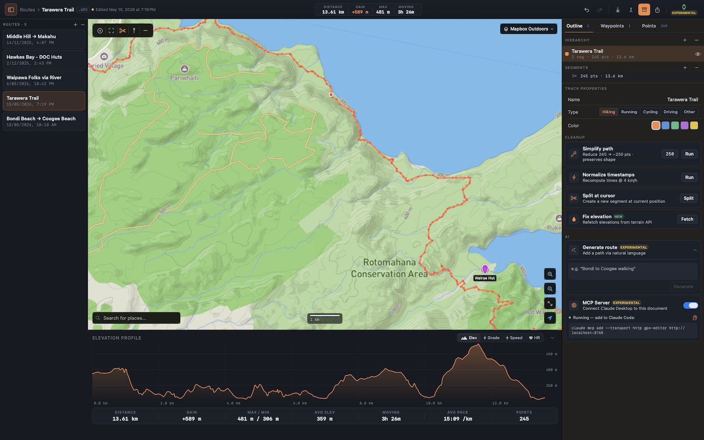

A full-featured map editor built for precision and ease of use. Drop in a file, clean up the noise, and ship a tidy .gpx in seconds.

Built around a familiar map-and-panel workflow. Edit tracks, manage waypoints, and clean up data without leaving the file.
Switch between Standard, Hybrid, OpenStreetMap, and OpenTopoMap with contour lines — pick the view that fits the terrain.
Drop, label, and reorganize waypoints. Automatic clustering keeps the map readable even at low zoom.
Select, move, and delete track points. Split segments at the cursor or merge them with a click.
Visualize gain, max, and pace. Fetch fresh elevation data from OpenTopoData for any track in one click.
Reduce noisy points to a configurable target while preserving shape. Recompute timestamps at a 4 km/h walking pace.
Combine multiple files into one with full undo. Routes are converted to tracks on import for easier editing.
Get AI-assisted suggestions for route development, powered by Apple Intelligence built into macOS.
Sync tracks and waypoints directly to a connected Garmin device. Tracks write as FIT course files; waypoints drop into the device's import folder.
Run a local Model Context Protocol server and connect Claude Code or Claude Desktop directly to your open document — edit tracks and generate routes through natural language.
Search places by name and drop them onto your track as waypoints, with the search bar built into the map.
Every edit is reversible. Step backward and forward through a complete history of your changes.
Distances render in metric or imperial automatically, following your macOS system settings.
The workflow most users land on after a few sessions.
Drag a .gpx file into the window, or use ⌘O. Routes are auto-converted to tracks so they're ready to edit.
Click to add points, drag to move, or use the toolbar to split, merge, and clean. The right panel exposes track properties live.
Press ⌘S and the file writes back to its original location — security-scoped bookmarks keep access seamless.
Worth learning the first six.
If you don't see your question, get in touch below.
Bug, feature idea, or just a hello — all are welcome.
Direct line for support questions and feedback. Replies usually within a day or two.
jamespaulmoriarty@proton.me →Leaving a review helps tremendously. It's also the right place to flag a billing or download issue.
Open in the App Store →No analytics, no tracking, no account. Everything happens on your device. Read the full policy.
View privacy policy →